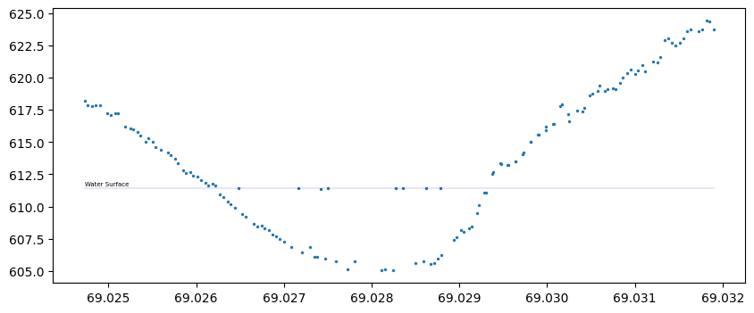

import lidar_review_tools.lidar_tools as ltDetect water surface.
Most water bodies self level. Lidar elevation measurements of the water surface can frequently be detected by looking at histogram of the elevation measurements. The water surface will be flat except for any surface wave action, and even the waves can be accomodated with larger histogram bins. This function eaxmines the lidar elevatoin measurements and if it detects a flat surface which is above a threshold, it will return an object with attributes about the surface, including the detected water surface mean and median heights, and the standard deviation of those detected heights. It also returns a bool water_found.
detect_lidar_water_surface
detect_lidar_water_surface (df, col='elev', thresh=4, binsize=0.1, plot=True, height=4, width=10, title='Lidar Water Surface Detector', xlabel='Elevations [m]', ylabel='Range Bin Count', title_fontsize=14, xlabel_fontsize=12, ylabel_fontsize=12)
Find the water surface in a Pandas dataframe or numpy array.
| Type | Default | Details | |
|---|---|---|---|
| df | DataFrame or Numpy data containing a column of LiDAR elevations. | ||
| col | str | elev | Label of elevation data. |
| thresh | int | 4 | Minimum number of elevations required for water surface detection. |
| binsize | float | 0.1 | Elevation binsize in meters. |
| plot | bool | True | Optionally generate plots of the elevation histogram, and inputelevations. |
| height | int | 4 | Height of the plot. |
| width | int | 10 | Width of the plot. |
| title | str | Lidar Water Surface Detector | Plot title. |
| xlabel | str | Elevations [m] | Plot X axis label. |
| ylabel | str | Range Bin Count | Plot Y axis label. |
| title_fontsize | int | 14 | Plot title font size, (points) |
| xlabel_fontsize | int | 12 | Plot xlabel font size, (points) |
| ylabel_fontsize | int | 12 | Plot ylabel font size (points) |
| Returns | object | A class containing attributes. |
Testing
Colab
If you are testing this on Google Colab, run this cell to select the ATM data file for testing.
if __name__ == '__main__' and False:
test_atm_fn = '/content/lidar_review_tools/data/atm/profile-1-atm-xyz.zip'
! head {test_atm_fn}Docker Jlab.
Run this cell if you are running in the Docker Jlab
if __name__ == '__main__' and True:
test_atm_fn = '~/work/github-projects/lidar_review_tools/data/atm/profile-1-atm-xyz.zip'Now, let’s take a quicklook at the first 3 lines of the data in the file.
It is in classic CSV format. The first column is Longitude, second column is Latitude and the third is the elevation data.
! zcat {test_atm_fn} | head -3-49.4788530000,69.0319020000,623.736
-49.4788610000,69.0318160000,624.403
-49.4788690000,69.0317280000,623.6Load the ATM test data
Now load the test data into a Pandas DataFrameusing the Pandas read_csv() csv reader.
Since the data does not already have any column labels, we will add column names using the names parameter, and then via the read_csv() function.
if __name__ == '__main__' and True:
atm = pd.read_csv(test_atm_fn, names=["lon", "lat", "elev"])atm.head(3)| lon | lat | elev | |
|---|---|---|---|
| 0 | -49.478853 | 69.031902 | 623.736 |
| 1 | -49.478861 | 69.031816 | 624.403 |
| 2 | -49.478869 | 69.031728 | 623.600 |
plt.figure( figsize=(10,4))
plt.scatter( atm['lat'], atm['elev'], marker='o', s=2 )Load the ATM test profile dataset, run detect_lidar_water_surface() and plot the results.
## Test detect_lidar_water_surface()
if __name__ == '__main__' and True:
rv = detect_lidar_water_surface(atm, plot=True, thresh=4, binsize = 0.1 )Printout the return rv data.
if __name__ == '__main__' and True:
print("\nData returned by detect_lidar_water_surface()\n\n Key : Value\n-------------------------------")
for i in rv.__dict__:
if i == 'bins' or i == 'hist':
continue
if type( rv.__dict__[i] ) == np.float64:
print(f"{i:20}: {rv.__dict__[i]:8.3f}")
else:
print(f'{i:20}: {rv.__dict__[i]}')
Data returned by detect_lidar_water_surface()
Key : Value
-------------------------------
water_found : True
binsize : 0.1
thresh : 4
plot : True
ele_min : 605.037
ele_max : 624.403
surface_bin_value : 611.337
peak_elevation_dif : 19.366
max_v : 7
surface_idx : 63
low : 611.237
high : 611.437
mean_surface : 611.417
std_surface : 0.015
median_surface : 611.421x = [atm['lat'].min(), atm['lat'].max()]
y = [rv.mean_surface,rv.mean_surface]
plt.figure( figsize=(10,4))
plt.plot( x, y, color='blue', alpha=.1)
plt.scatter(atm['lat'], atm['elev'], marker='o', s=2 )
plt.text( x[0], y[0]+.2, "Water Surface", fontsize=5)Text(69.024727, 611.6167142857144, 'Water Surface')
x[69.024727, 69.031902]